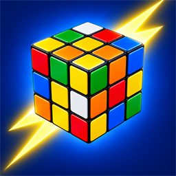

섞인 큐브를 카메라로 찍으면 맞추는 순서를 알려 주는 큐브 풀이 도우미입니다.
Point your camera at a scrambled cube and get the solution in a flash.
큐브의 여섯 면을 차례로 비추면 색을 읽습니다. 잘못 읽힌 칸은 눌러서 고치고, 전개도에 색을 직접 넣을 수도 있습니다.
큐브 크기를 골라 풉니다. 3x3 은 보통 20수 안팎, 2x2 는 가장 짧은 풀이를 보여 줍니다.
한 동작씩 3D 큐브가 돌아가며 보여 주고, 동작 기호(R U R')도 함께 표시합니다. 앞뒤로 넘기며 천천히 따라 할 수 있습니다.
색 개수가 맞지 않거나 실제로 나올 수 없는 배치면 풀기 전에 알려 줍니다.
Show each of the six faces and the colors are read for you. Tap any square to fix it, or fill in the cube map by hand.
Pick your cube size. 3x3 solutions are usually around 20 moves, and 2x2 shows the shortest solution.
A 3D cube turns one move at a time, with move notation (R U R') alongside. Step back and forth at your own pace.
If the color counts are off or the cube cannot exist, you are told before solving.
계정 가입 없이 사용합니다. 카메라 영상은 기기 안에서 색을 읽는 데만 쓰고 저장하거나 보내지 않습니다. 개발 중인 앱이라 내용은 출시 전에 바뀔 수 있습니다.
No sign-up needed. The camera is only used on your device to read colors, and nothing is saved or sent. This app is in development, and details may change before release.